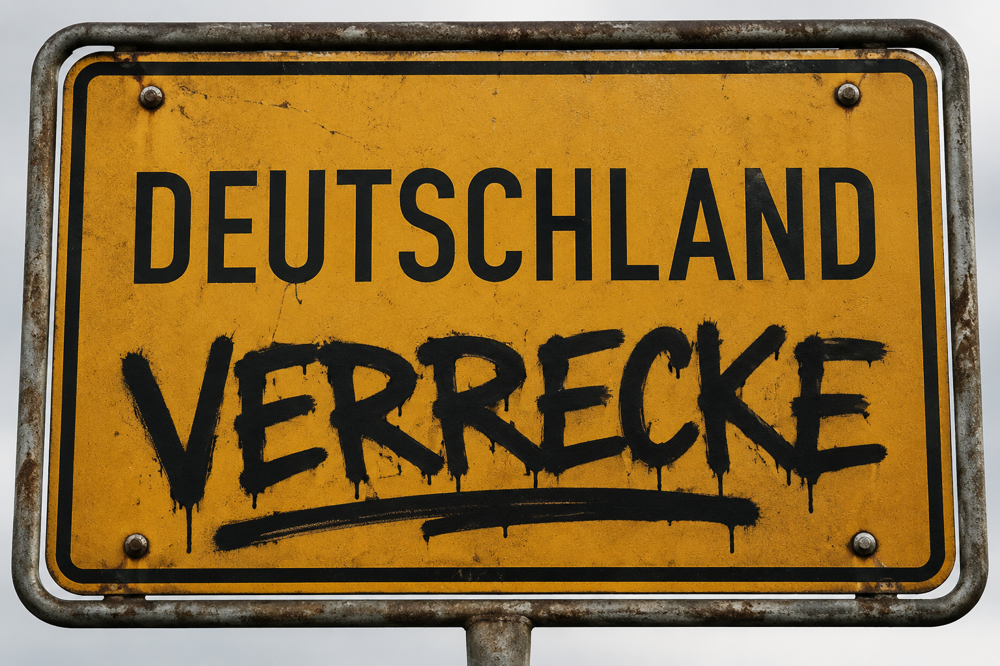

Kolumne
Was passiert, wenn ein Punk-Slogan seine Szene verlässt?
Über „Deutschland verrecke“, Slime, Formulare und die Frage, warum manche Parolen außerhalb des Konzertkellers plötzlich anders klingen.

Vor ein paar Tagen bin ich auf Instagram über einen Beitrag von Bernd Siggelkow gestolpert. Arche-Leiter, Pastor, Speaker, Autor, Hundetrainer, Podcaster. Also offenbar ein Mensch, der beruflich ungefähr so viele Schubladen belegt wie andere Leute Socken besitzen.
Darin steht sinngemäß:
Wer „Deutschland verrecke“ ruft, hat den Bezug zu den Bürgern verloren.
Ein Satz, bei dem wahrscheinlich viele Menschen sofort zustimmend nicken.
Und gleichzeitig viele Punker die Augen verdrehen.
Denn genau hier beginnt ein Missverständnis, das inzwischen seit Jahrzehnten existiert.
Was draußen ankommt
Wer außerhalb der Punk-Szene unterwegs ist, hört bei „Deutschland verrecke“ oft:
Ich hasse dieses Land.
Oder:
Ich hasse die Menschen, die hier leben.
Oder sogar:
Deutschland soll untergehen.
Wenn man den Satz isoliert betrachtet, ist diese Interpretation nicht einmal völlig absurd.
Nur war das wohl nie die Bedeutung, die viele Punkbands damit verbunden haben.
Wenn ich auf einem Punk-Konzert „Deutschland verrecke“ brülle, dann wünsche ich keinem Rentner in Castrop-Rauxel den Tod.
Ich wünsche mir auch nicht, dass der Getränkemarkt abbrennt.
Schon allein deshalb nicht, weil ich dann morgen kein Bier mehr bekomme.
Und schon gar nicht wünsche ich Oma Erna den Untergang.
Wogegen sich der Satz richtet
Der Satz richtet sich nicht gegen Menschen.
Er richtet sich gegen das, was viele Punkbands seit Jahrzehnten kritisieren:
Nationalismus.
Militarismus.
Autoritätsgläubigkeit.
Hörigkeit.
Ausgrenzung.
Bürokratie.
Vor allem Bürokratie.
Wenn ihr mich aktuell fragt, was mich am deutschen Staat am meisten ankotzt, dann sind das weder die Nachbarn noch der Typ an der Pommesbude.
Es sind Formulare.
Formulare, die weitere Formulare benötigen.
Um zu beantragen, dass man irgendwann ein Formular beantragen darf.
Vielleicht ist „Deutschland verrecke“ manchmal einfach die kürzere Version von:
Könnten wir bitte aufhören, für jeden Scheiß drei Anträge, vier Nachweise und zwei Warteschleifen zu brauchen?
Aber ganz so einfach ist es nicht
Natürlich ist die Sache komplizierter.
Denn gleichzeitig muss man sich als Punk auch eine unbequeme Frage stellen:
Wenn ein Slogan seit vierzig Jahren außerhalb der eigenen Szene regelmäßig missverstanden wird, liegt das wirklich nur an den Zuhörern?
Vielleicht reden beide Seiten seit Jahrzehnten aneinander vorbei.
Die einen hören eine Kritik an Nationalismus, Autorität und Staat.
Die anderen hören einen Angriff auf die Menschen, die in diesem Land leben.
Und genau deshalb finde ich die Geschichte interessant.
Nicht weil Bernd Siggelkow ein böser Mensch wäre. Kenne den Typen nicht.
Nicht weil Punker grundsätzlich Recht hätten.
Sondern weil hier zwei völlig unterschiedliche Bedeutungswelten aufeinanderprallen.
Slime, Kunst und Gerichtskram
Besonders spannend wird das, wenn man sich anschaut, wie deutsche Gerichte die Sache bewertet haben.
Viele kennen nur die berühmte Zeile von Slime:
„Deutschland muss sterben, damit wir leben können.“
Weniger bekannt ist, dass sich sogar das Bundesverfassungsgericht mit diesem Lied beschäftigt hat.
Die Richter kamen damals zu dem Schluss, dass man Kunst nicht einfach wortwörtlich lesen darf.
Slime und Kunst, lol.
Gemeint war: Das Lied muss als künstlerische Auseinandersetzung verstanden werden, nicht als Verwaltungsformular für Landesuntergänge.
Noch interessanter:
Die Zeile ist eine Umkehrung eines alten militaristischen Spruchs:
„Deutschland muss leben, und wenn wir sterben müssen.“
Slime drehten diesen Satz einfach um.
Aus Sicht der Band war das keine Aufforderung zur Vernichtung eines Landes.
Sondern eine Absage an Nationalismus und die Idee, Menschen hätten sich einem Staat unterzuordnen.
Selbst Heinrich Heine tauchte in der Begründung des Gerichts auf.
Ja.
Heinrich fucking Heine.
„Deutschland, wir weben dein Leichentuch ...“
Offenbar ist provokante Kritik am eigenen Land deutlich älter als Punkrock.
Was bleibt?
Am Ende bleibt für mich deshalb nicht die Frage, ob man den Satz gut finden muss.
Muss man nicht.
Die eigentliche Frage lautet:
Was passiert, wenn ein Punk-Slogan seine Szene verlässt?
Vielleicht hören die einen eine Kritik an Nationalismus, Militarismus, Hörigkeit und Autorität.
Während die anderen hören, jemand wolle Deutschland oder seine Bewohner abschaffen.
Und vielleicht erklärt genau das, warum wir diese Diskussion auch vierzig Jahre später noch führen.
Wobei ...
Wenn wir schon bei missverstandenen politischen Parolen sind:
Wie war das eigentlich mit „Nazis töten“?
Gehört da ein Komma hin?
Falls ihr dazu eine Meinung habt, wisst ihr, wo ihr mich findet.
Auf Instagram.
Auf Facebook.
Oder irgendwo zwischen einem Punkkonzert und dem nächsten Behördenformular.
Prost.
Quellencheck: Die BVerfG-Stelle ist über den Beschluss 1 BvR 581/00 vom 03.11.2000 geprüft. Der Bezug zur Umkehrung von „Deutschland muss leben ...“ und zu Heinrich Heine wird dort im Kontext der künstlerischen Einordnung behandelt.